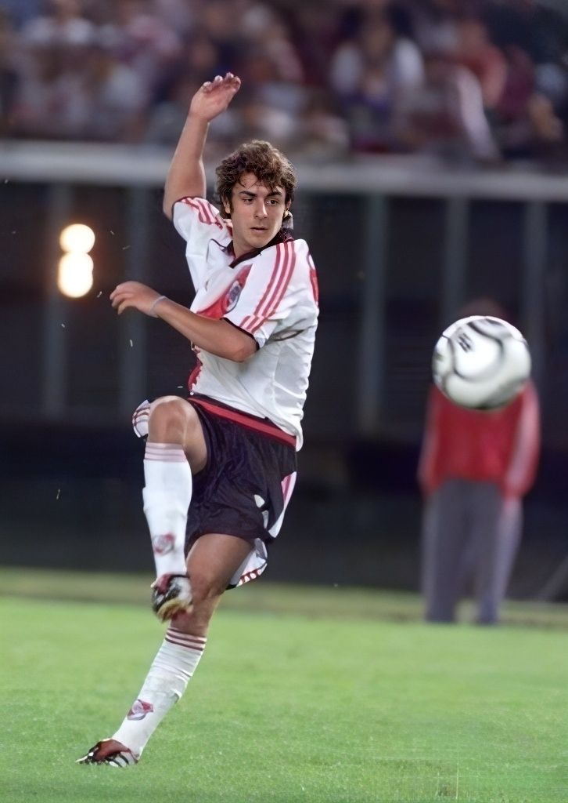

Hola, soy Guille. Estudio Ingeniería en Sistemas en la UTN La Plata y este es el primer archivo HTML que armo para la materia Desarrollo de Software 2026.

Cosas que me interesan de la carrera:
- Programar en Python
- Aprender más sobre Automatización
- Entender cómo funcionan los Sistemas Operativos
Si quieren ver qué otras cosas estuve haciendo, les dejo el link a mi perfil de GitHub.